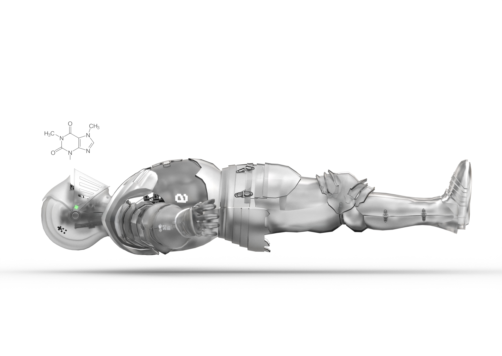
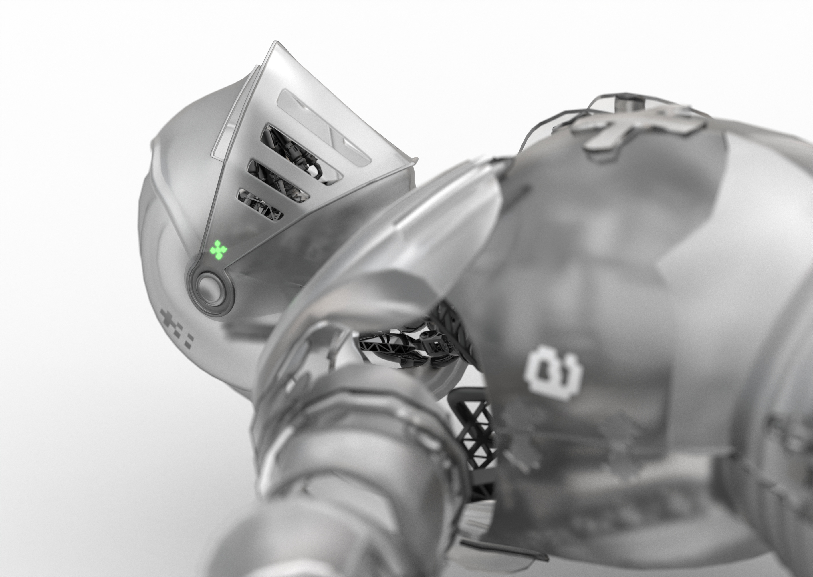

BARISTA ENGINEERING®ТОЧНОСТЬ. ХАРАКТЕР. КОФЕ.EST. IN THE FUTURE
ENGINEER

01 / ФИЛОСОФИЯ
Искусство
точности✳
Инженерный подход. Человеческий характер.
Кофе как точка соприкосновения.
Демонстрационная концепция сайта Engineer: металл, свет и движение превращают фирменного персонажа в центр цифрового опыта.

FIG. 02 / CRAFTED CHARACTER02 / ДЕТАЛИ ИМЕЮТ ЗНАЧЕНИЕХолодный металл.
Холодный металл.
Живой характер.
Mechanica Knight — визуальный герой этой концепции. Поверни объёмную модель прокруткой или перетаскиванием. Геометрия воссоздана по фотографиям; скрытые части реконструированы приблизительно.
СКАЧАТЬ 3D-МОДЕЛЬ .GLB ↗3D-РЕКОНСТРУКЦИЯ ПО РЕНДЕРАМ / CONCEPTБудущее
начинается с идеи.
Это демонстрационный макет для обсуждения с партнёрами. Композицию, тексты и сценарии можно развить под задачи будущего сайта.